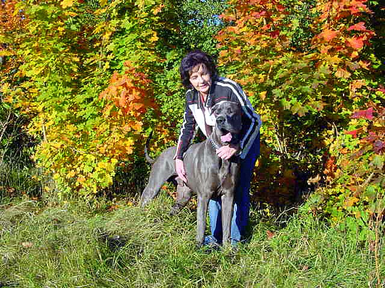
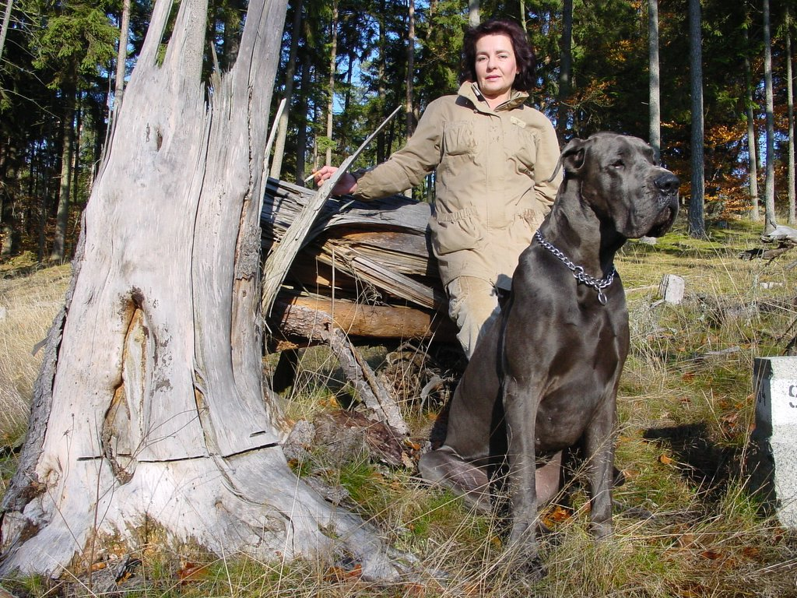
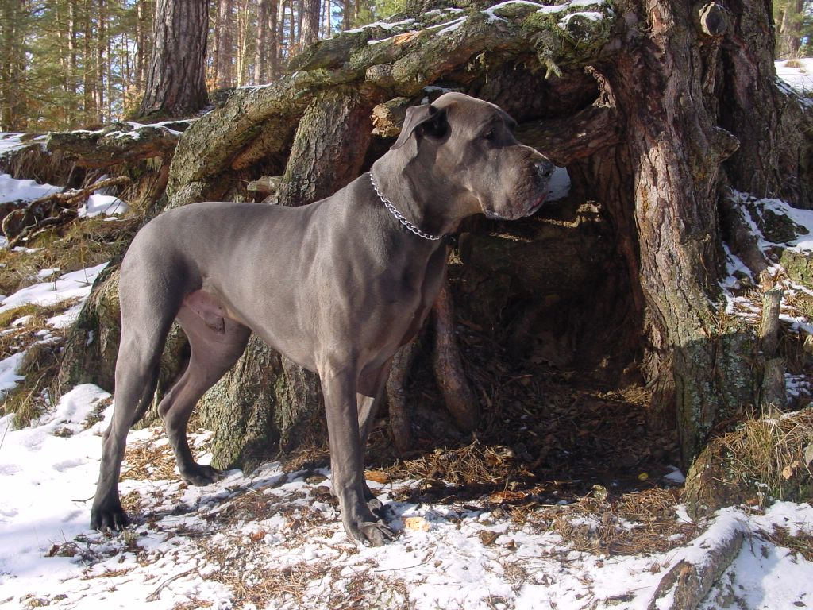
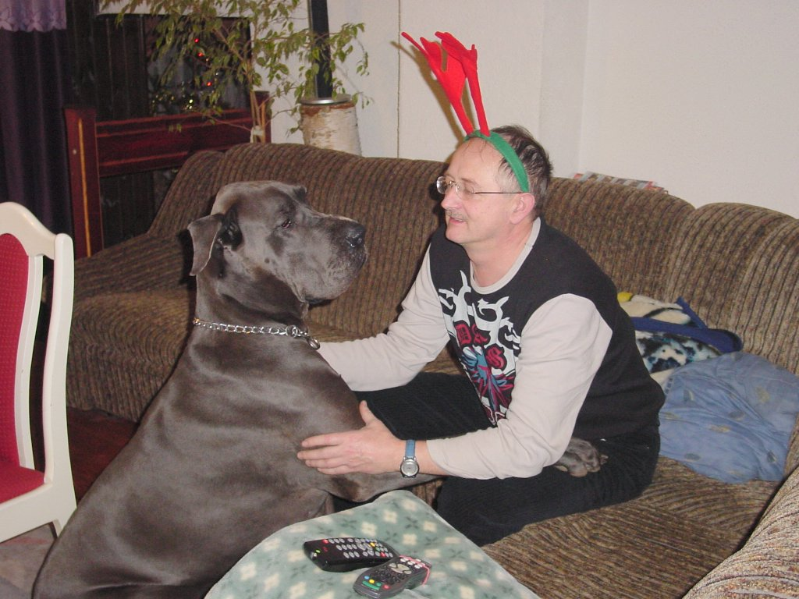
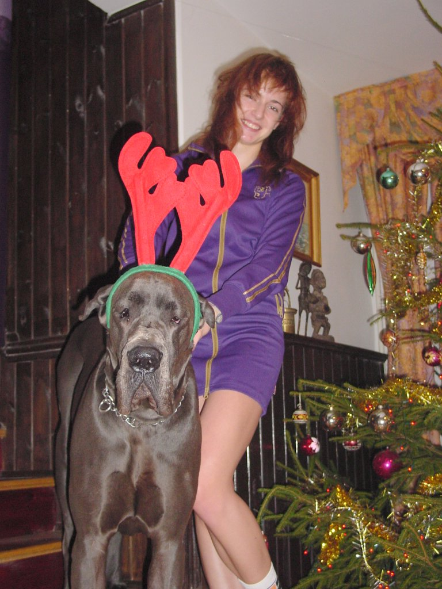

| LITTER "B" Modry Efekt, born: 30.03.2003 4/5 blue | |
| father IZYDOR Medium |
mother SUZZANE VEGA Herbu Zadora |
 |
 BIJOU Modry Efekt
BIJOU Modry Efektborn: 30.03.2003 Junior Middle & East Europe Winner 2004 owner & breeder: A. Sowa-Halicka m: SUZANNE VEGA Herbu Zadora  
|
|
| |
 BARBADOS
BARBADOSModry Efekt InterChampion Champion of Poland Champion of Slovakia Champion of Hugnary Junior Champion of Poland |
 BABETTE
BABETTEModry Efekt Champion of Poland Junior Champion of Poland |
 BARABASZ
BARABASZModry Efekt |
 BOSTON
BOSTONModry Efekt |
 BRAVADO
BRAVADOModry Efekt Champion of Poland Junior Champion of Poland |
|
|
BARLEY Modry Efekt      | |